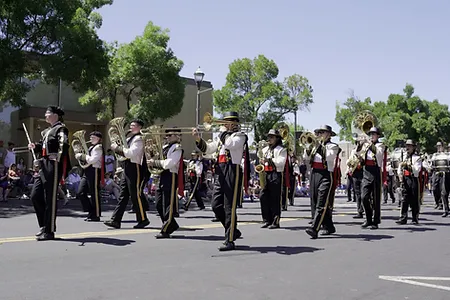

Hobbies & Interests
Education
Work experience
- Programming (HTML, CSS, JavaScript, Python)
- Video games & puzzles
- Music - I love not only listening to but also playing music. I am part of my high school's marching, concert, and pep bands playing the bass clarinet!
- Anything science related, but especially math and physics
- Space (part of how I grew to love physics)
- Economics & investing - I am the president of Economics Club at my school, teaching and learning about financial life skills!
- I'm a huge Marvel fan!

- AP Calculus BC
- AP Computer Science Principles
- All Star Code Summer Intensive - I made this website as a project for ASC!
- Young Adult Volunteer at local library
- Teen Advisory Board at local library
- Private tutoring for math, reading, and writing
- Teen Academy - I interned in Administrative Services with the City of Livermore for a month!